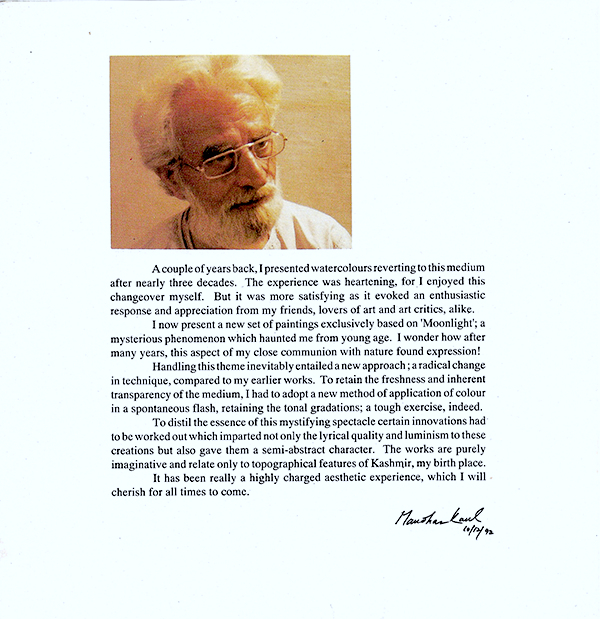
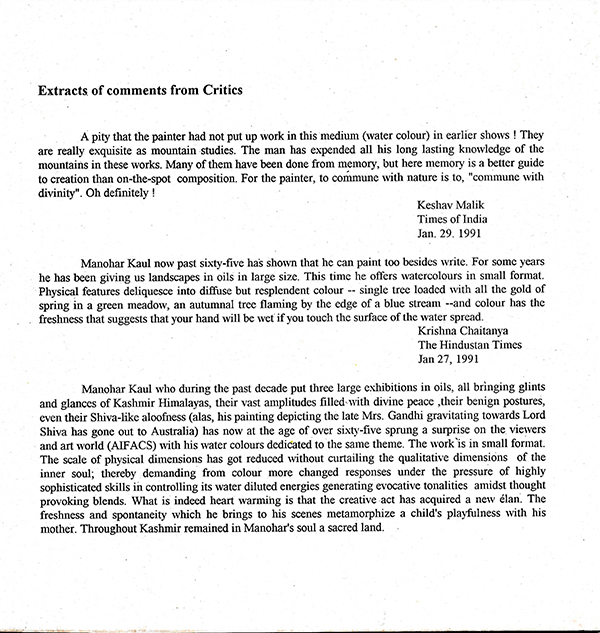
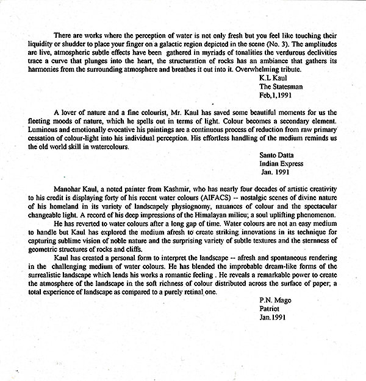
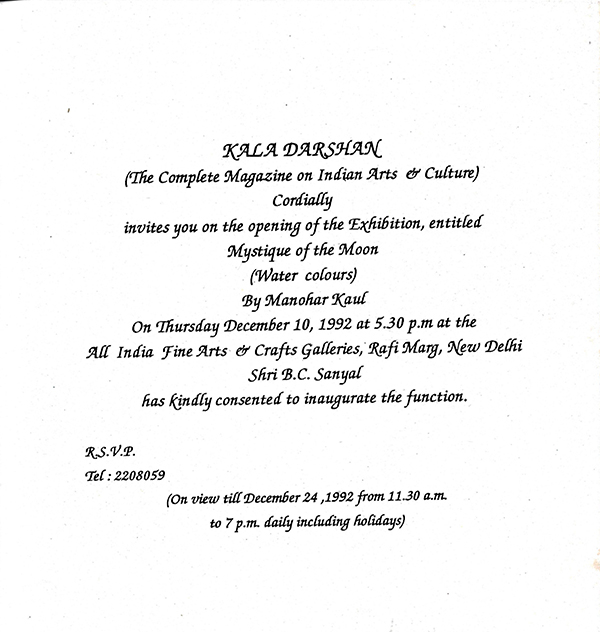
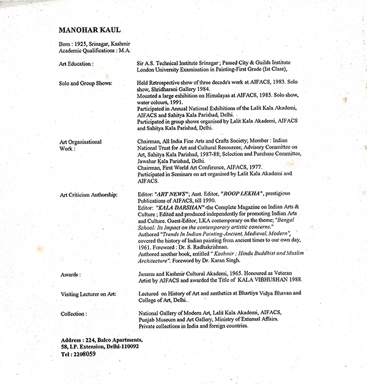
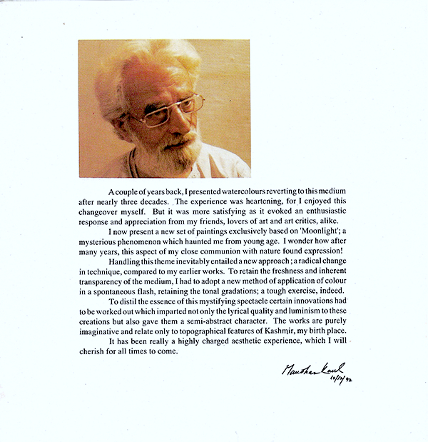
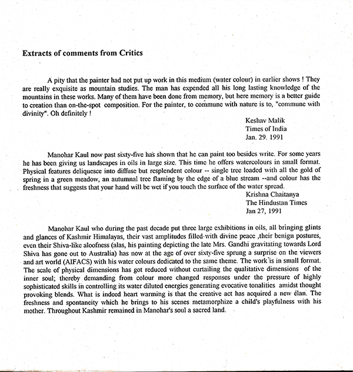
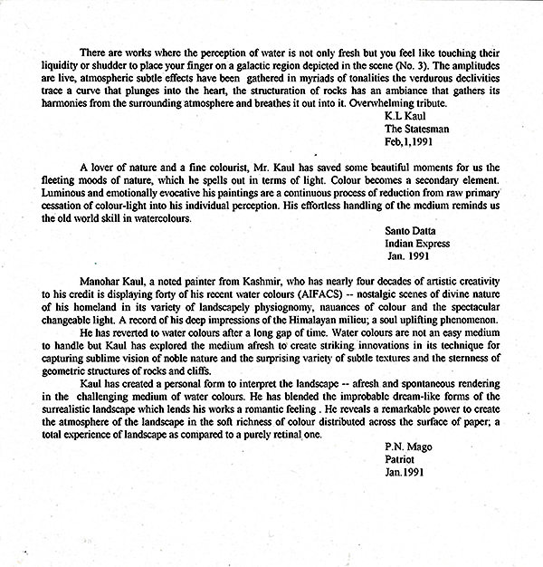
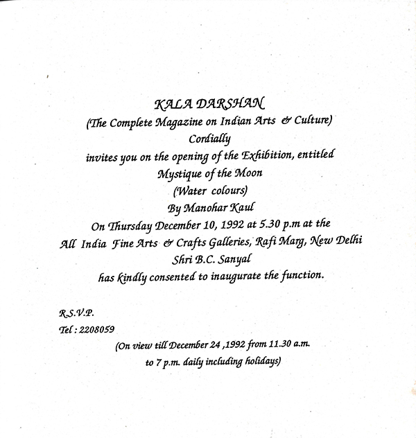
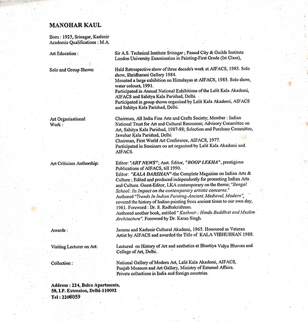

Mystique of the Moon: Kashmir in Watercolour
New Delhi, 1992
In this evocative exhibition at AIFACS, Manohar Kaul offered a luminous meditation on Kashmir bathed in moonlight. Titled “Mystique of the Moon”, the series of watercolours captured the valley in hushed tones—mountains, lakes, and forests rendered not with daylight clarity but with the soft diffusion of memory and nocturnal light. The moon here is not a motif, but a mood—subtle, shifting, and deeply personal.
Catalogue
 









Press Reviews
Sunday Mail Art Review – Jan. 10, 1993
The Valley at Night: Manohar Kaul Pictures Kashmir
By Priya Sahgal
If art is indeed an imitation of nature, then 65-year-old Manohar Kaul has tried to capture one of its most romantic aspects. His latest exhibition, titled "Mystique of the Moon", features 40 watercolours, all portraying the Kashmir Valley under moonlight, and is on display at the All India Fine Arts and Crafts Society (AIFACS) gallery in Delhi.
The paintings depict characteristic Himalayan landscapes—snowy mountains, tranquil lakes, and dense pine forests—all rendered in nocturnal hues. Sometimes the moon is not directly shown, but its presence is suggested by the gentle reflections of moonlight on Himalayan peaks or the shimmering lake surfaces. At other times, it appears as a pale yellow dot in a murky sky, always allowing its light to saturate the canvas.
The dominant tones are somber greens, blues, and browns, contributing to the dreamlike atmosphere. Though Kaul has held three previous exhibitions of oil paintings, this is his first return to watercolour in over a decade, and the theme remains consistent—the mystique of the Himalayas.
“It is through my paintings that I’ve been able to express my deep communion with nature,” says the Kashmiri artist, who is also the Chairman of AIFACS. “Moonlight is a mysterious phenomenon that has haunted me since youth.”
To tackle this subject, Kaul explains, he had to adopt a new technique: “It required a spontaneous application of colour, while still maintaining delicate tonal gradations.”
His works offer not only a painterly vision of the Valley, but also an emotional journey, where memory, mystery, and nature’s grandeur converge in twilight stillness.
Art-The Hindu, December 18, 1992
Manohar Kaul's Mountainscapes
By Santo Datta
"Mystique of the Moon," a series of mountainscapes in watercolour by Manohar Kaul, is currently on view at the All-India Fine Arts and Crafts Society (AIFACS) on Rafi Marg, New Delhi.
Known for his earlier large oil landscapes, Kaul is now a senior artist in his 60s and has been exploring the medium of transparent watercolour for the past three years. His new work continues his long-standing focus on the Himalayan terrain.
These paintings carry an undercurrent of nostalgic sadness, a feeling often found in the work of sensitive Kashmiri artists who were born and raised in what is often called the "Valley of the Gods." In this series, Kaul envisions snow-capped peaks, wooded hillsides above brooks and lakes, all bathed in gentle moonlight and enveloped in silence.
The subtle light dances on icy cliffs, rippling streams, and the leafy haze of flowering treetops. The rest is a delicate and surprising range of tonal nuances that suggest the darker zones of the landscape.
Kaul fully exploits the transparency of watercolour to evoke a mystical vision of mist-laden mountain forms. At times, his works recall the "tenebrism" — or dramatic use of dark and light — that marked the paintings of European masters of the High Renaissance and Baroque periods.
One especially intriguing element, noted by this reviewer, is that in many landscapes where the moon itself is absent, the "mystique of the moon" remains powerfully felt. Works like Nos. 34, 33, and 5 demonstrate this effect: Kaul’s handling of light and atmosphere renders the moon’s presence unnecessary, as moonlit woodlands, reflective waters, and glowing skies suggest its spirit even in its physical absence.
दैनिक जागरण
मेरठ, २८ दिसम्बर १९९२
Dainik Jagran, Meerut – 28 December 1992
Art & Culture
कला-संस्कृति
The Conditions of the Mountains
पहाड़ की स्थितियां
There are very few accomplished artists who have given landscape painting in watercolour its due importance. Even if some did work in this direction, they often got lost in the overwhelming crowd of strictly modernist art.
However, Manohar Kaul of Kashmir, using the watercolour medium and nature as his foundation, has created an entirely new chapter in art history.
A recent exhibition of Manohar Kaul’s paintings was held at the AIFACS Art Gallery. The works on display presented the forms of mountains captured from multiple perspectives. Some of these works also evoke a dream-like state, suggesting a kind of daydream or inner vision.
In many paintings, human faces can be clearly discerned — though this should not be taken to mean that they are literal representations of human figures. Rather, they convey the presence or essence of the human.
In certain places, the influence of the nude figure can be observed, expressed symbolically rather than explicitly.
The mountain landscapes unfold in full dimension, their presence made vivid through the careful combination of colours and the precision of drawn lines. These are clear evidence that before choosing his subject, Manohar Kaul undertook a detailed and sensitive study of the mountains in all their conditions.
The mood and atmosphere of Kashmir — its landscapes, climates, and spiritual tone — pervade the entire body of work on
मक़बूल कलाकारों में बहुत कम ऐसे हैं जिन्होंने जलरंग (वॉटरकलर) में लैंडस्केप को महत्व दिया हो। यदि इस दिशा में कुछ लोगों ने कार्य किया भी, तो वह ठेठ आधुनिक कला की भीड़ में कहीं खो गए। लेकिन कश्मीर के मनोहर कौल ने जलरंग माध्यम में प्रकृति को आधार बनाकर एक नये इतिहास की रचना की है।
पिछले दिनों मनोहर कौल के चित्रों की एक प्रदर्शनी आईफैक्स कला दीर्घा में आयोजित की गई। प्रदर्शित कृतियों में पहाड़ों की आकृतियां अनेक कोणों से समाहित हैं। इन कृतियों में कहीं-कहीं दिवा स्वप्न जैसा अहसास कराती आकृतियाँ भी हैं।
मनुष्य के चेहरे स्पष्ट रूप से देखे जा सकते हैं — लेकिन इसका अर्थ यह नहीं कि ये चित्र सीधे रूप में मनुष्य की आकृतियाँ हैं। बल्कि वे मनुष्य के होने का अहसास कराते हैं।
कहीं-कहीं न्यूड प्रभाव भी सांकेतिक रूप में देखा जा सकता है।
पहाड़ की स्थितियाँ पूरे विस्तार के साथ उभरकर सामने आती हैं। रंगों का संयोजन और साकार होती रेखाएँ इस बात का प्रमाण हैं कि विषय को चुनने से पहले मनोहर कौल ने पहाड़ की सभी स्थितियों का सूक्ष्मता से विश्लेषण और अध्ययन किया है।
प्रदर्शित कृतियों में अधिकांश प्रभाव कश्मीर के परिवेश और माहौल से लिये गये हैं।
Exhibition Highlights
Archival photographs from the 1992 exhibition of Manohar Kaul’s Mystique of the Moon paintings, capturing moments with fellow artists, eminent guests, family, and friends who came to view the work.